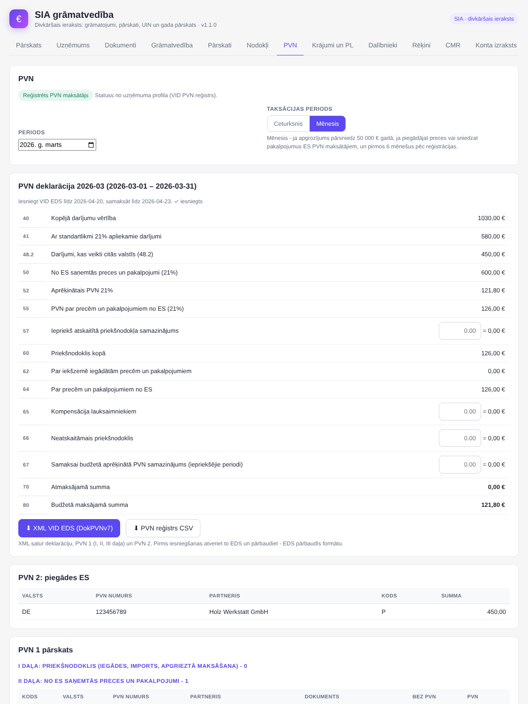
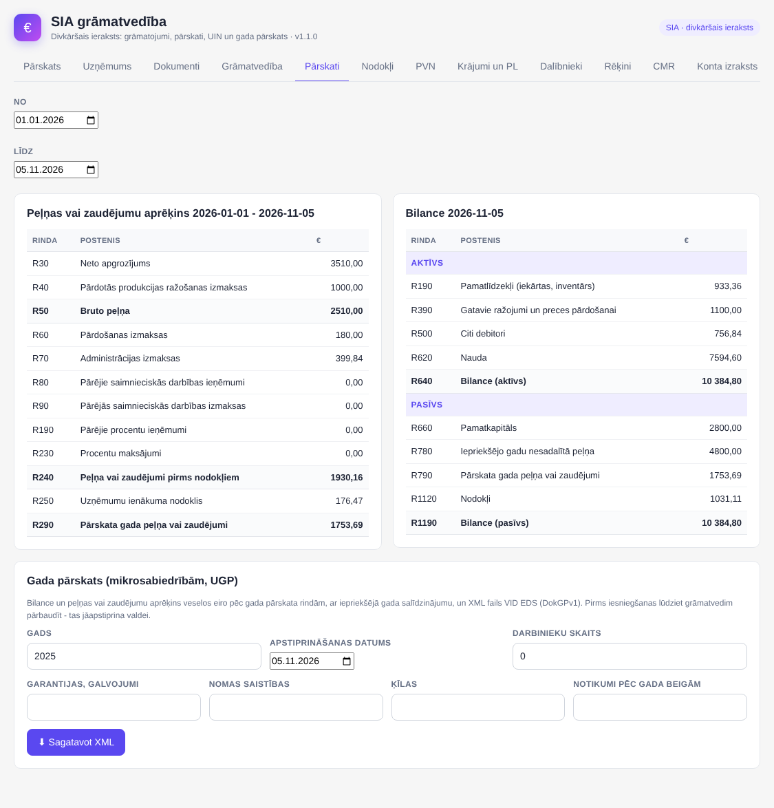

Mazām un mikro SIA (PVN maksātājām un nemaksātājām): divkāršais ieraksts no OpenCart pasūtījumiem, PVN deklarācija, UIN un gada pārskats. IK un pašnodarbinātajiem - Saimnieciskās darbības žurnāls.
OpenCart 3 + 4 vienā pirkumāNetiek mainīti OpenCart faili12 mēnešu atjauninājumi un atbalsts
Ko tas dara
Apmaksātie pasūtījumi, atmaksas un komisijas kļūst par grāmatojumiem automātiski; izdevumi ar kontu (izmaksas, krājumi, pamatlīdzekļi)
Apgrozījuma pārskats, konta izdruka, virsgrāmata CSV, peļņas vai zaudējumu aprēķins un bilance pēc gada pārskata rindām
PVN: katram dokumentam PVN veids (iekšzeme, ES preces un pakalpojumi, eksports, OSS, apgrieztā maksāšana, imports); deklarācija, PVN 1, PVN 2 un XML VID EDS
Nav PVN maksātājs? 139.2 panta reģistrācija un brīdinājums, kad jāreģistrējas
Krājumi pēc vidējās cenas, pamatlīdzekļi ar nolietojumu, inventarizācija
Dividendes ar UIN 20% vai 15% + IIN 6% (no 2026), UIN deklarācijas XML, gada pārskats mikrosabiedrībām (XML)
Termiņu kalendārs: UIN, PVN, OSS, IIN no dividendēm, gada pārskats
Nekas netiek dzēsts: anulēšana ar iemeslu, izmaiņu vēsture; uzņēmuma profils no reģistriem, CMR, rēķini
Nav iekļauts: algu aprēķins, piegādātāju rēķinu uzkrāšana, valūtas kursu starpības
Grāmatvežiem: bezmaksas licence profesionālai pārbaudei - sazinieties ar izstrādātāju
Sagatavo grāmatas un failus - neiesniedz VID; nav vēl pārbaudīts ar sertificētu grāmatvedi
Ekrānuzņēmumi

PVN deklarācija no dokumentiem

Peļņas vai zaudējumu aprēķins, bilance un gada pārskats